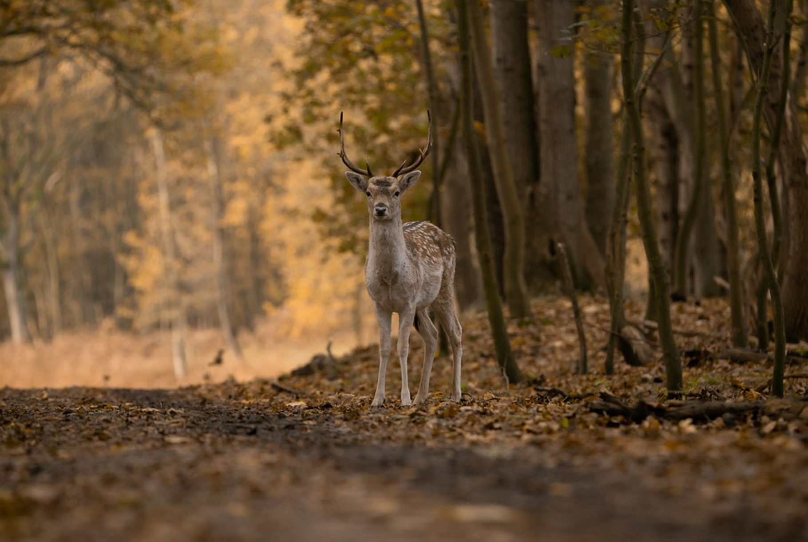
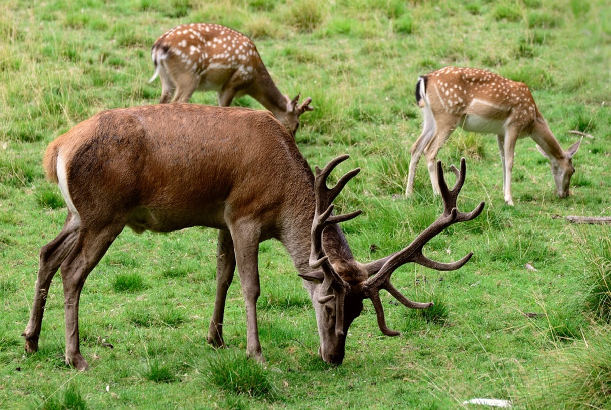

Alageyik ya da Yağmurca[1][2] (Dama dama) geyikgiller (Cervidae) familyasından, göçmen olmayan ve sürü oluşturan, kürek boynuzlu ve benekli gececil bir geyik türüdür. Dünyada en saf yabani alageyiklerin bulunduğu tek yer Antalya'dır ve yöre halkı tarafından Benekli geyik[3] adı da verilmektedir. Sonradan insanlar tarafından asırlar içinde bütün Avrupa'ya yayılmıştır. İran'ın batı kıyıları ötesinde Asya'da doğal olarak bulunmazlar. Evcil ve yarı evcil popülasyonları Avrupa başta olmak üzere değişik bölgelerdeki doğal parklarda ve korunaklı avlaklarda bulunan gözde bir türdür. Yabanileri çok ürkektir ve en ufak bir ses duyumunda ormanda izini kolayca kaybettirebilmektedir. Yaşam süreleri 12 yıl kadardır.